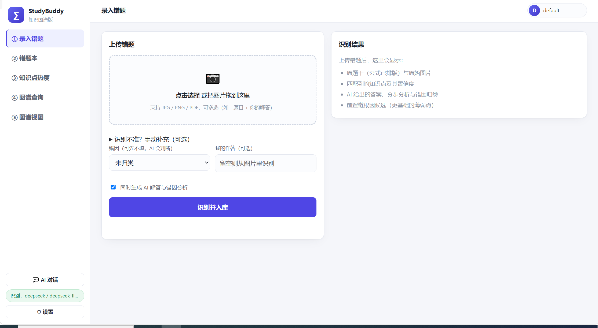
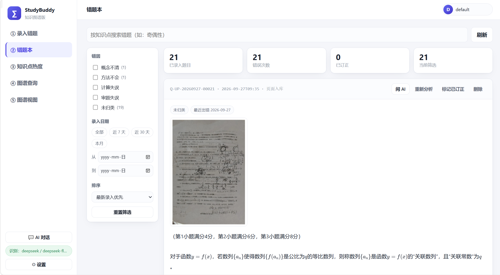
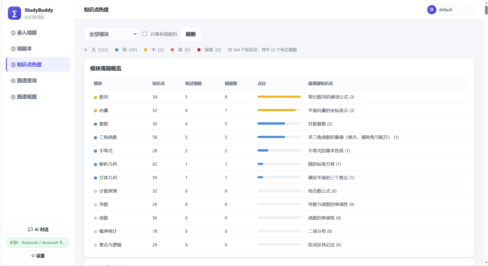
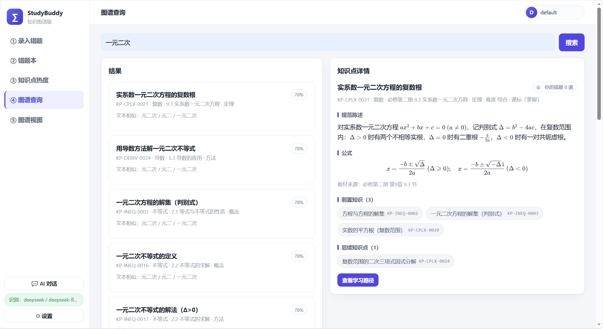
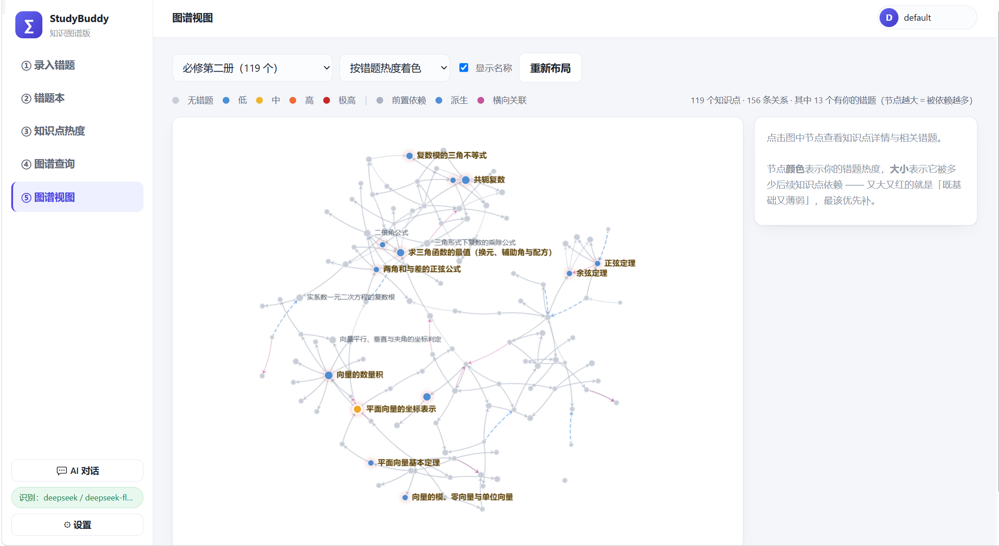
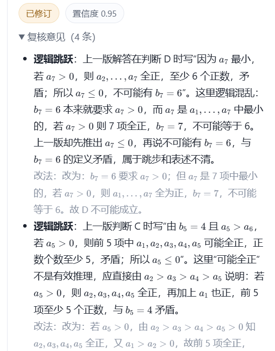
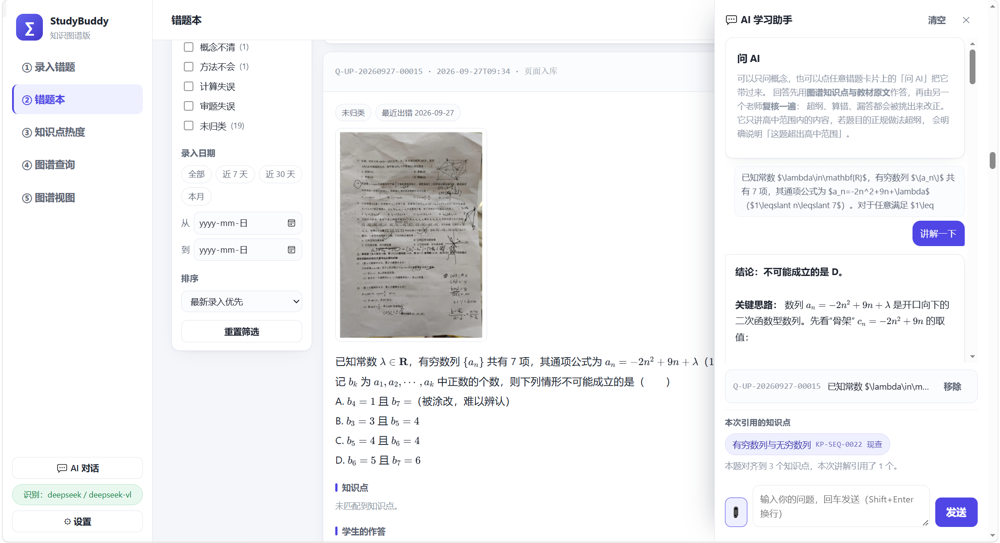

这是项目内置的真实图谱数据（一个前端页面即可运行，不需要后端）。 拖动、缩放图上的节点，点击任意知识点查看它的定义、公式与前后依赖关系。
小提示：节点颜色表示知识点类型，大小表示被多少后续知识点依赖（越大越基础）。 边：前置依赖 派生 横向关联
从「录入一道错题」到「知道下一步补什么」，全流程都在本机完成。
手机拍整页试卷或上传 PDF，按页识别、多题勾选后入库；题干识别不准还能手动订正。
每道题自动匹配到图谱上的知识点；不确定的候选会请你确认，绝不硬塞一个错误归属。
沿「前置依赖链」向上追溯：这道题错的可能是更底层、更该先补的知识点。
把错题铺在 544 个知识点上形成热力图，冷→热一眼看出最薄弱的模块与章节。
错题数 × 课标要求 × 图中心性综合打分，顺序不是「错得多」而是「先补最值钱的」。
先由「图谱知识点 + 教材原文」作答，再由一位复核老师挑错——超纲、算错、漏答都会被改正。
以下截图来自真实运行中的界面：从拍照录入错题，到知识点热度、图谱检索、知识网络可视化，以及 AI 双保险讲解与复核。点击图片可放大查看。







只需要 Python 3.10+（Windows / macOS / Linux 通用）。 数据完全本地化：错题库、上传的题目图片、API 密钥都只存在你自己的电脑上。
git clone https://github.com/Colinxiao123/studybuddy.git
cd studybuddy
python run.py --install # 首次：自动建虚拟环境、装依赖
python run.py # 之后每次：起服务 + 打开浏览器下载源码到本地任一目录
python run.py --install 自动建环境装依赖
浏览器自动打开，拍照或拖入错题图片即可